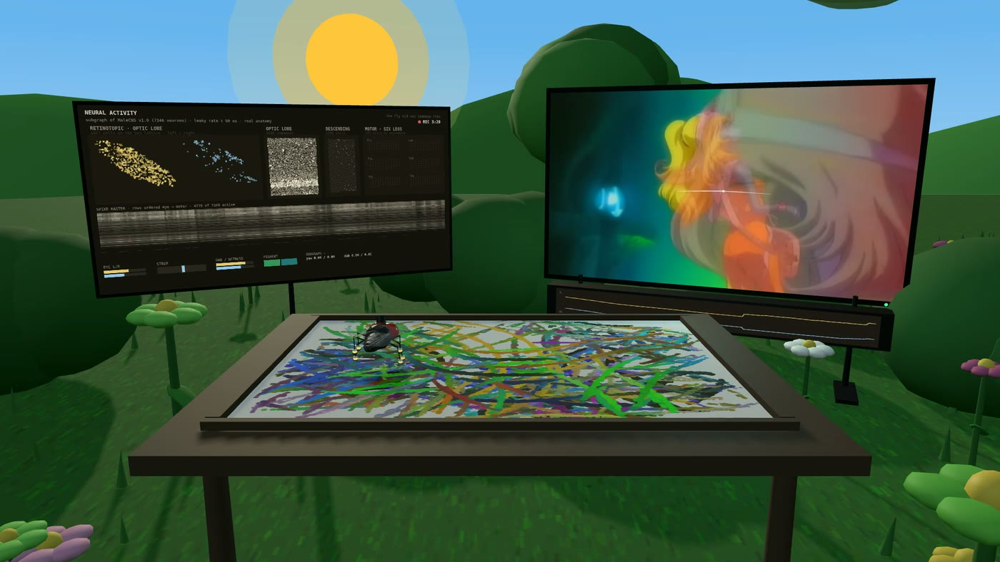
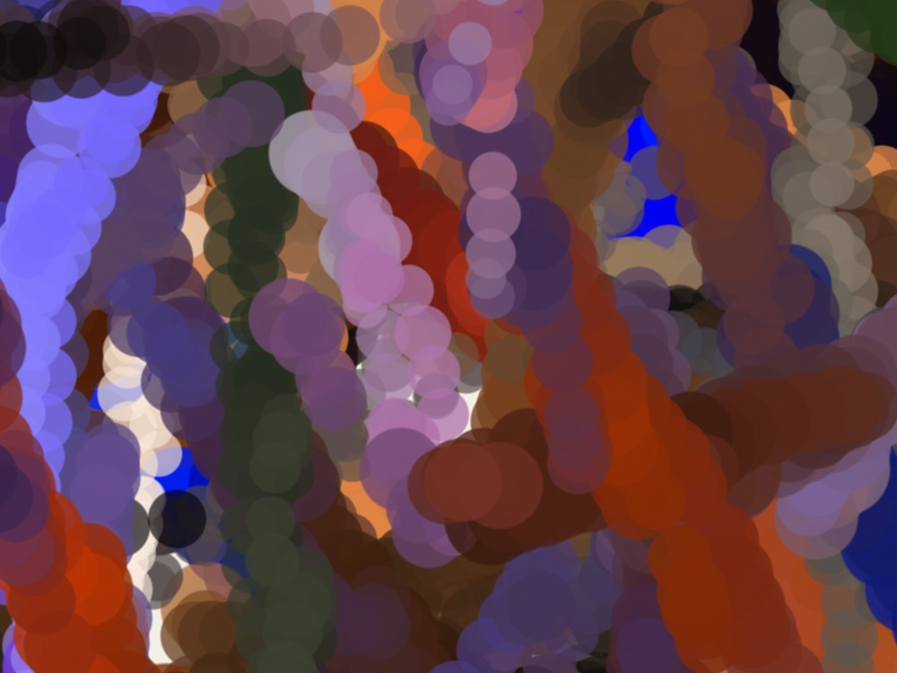
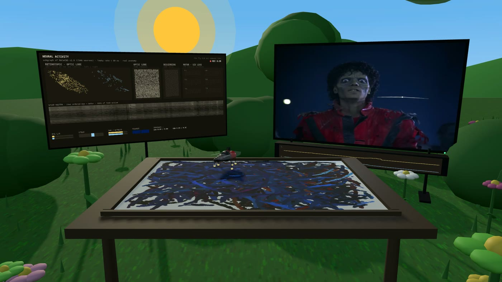
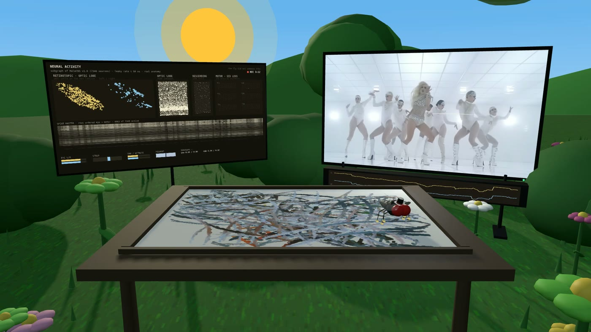
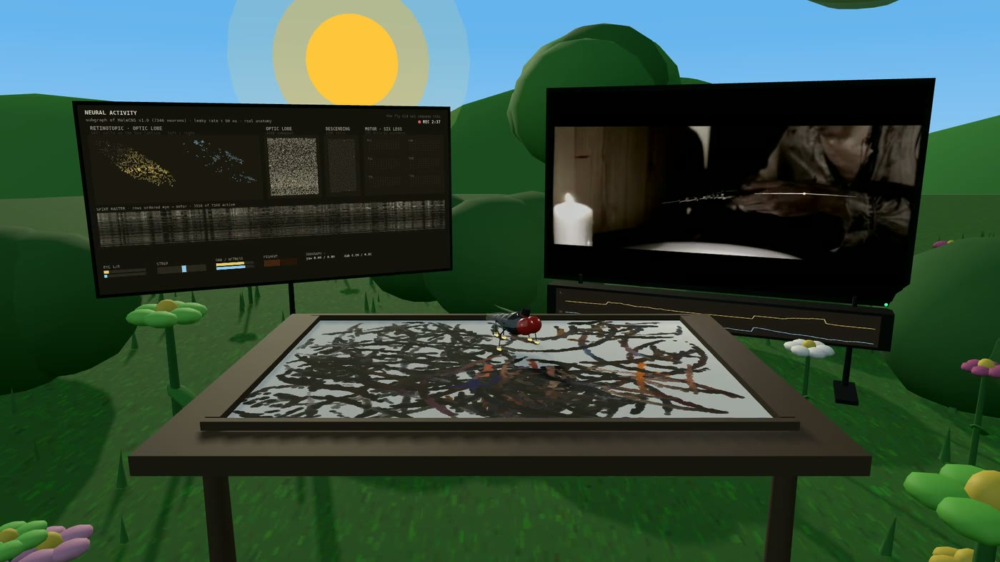

Field guide · 17 September 2026 · Abstract Fly Walk
A music video is light. A documented circuit walks on a sheet of paper. Six feet leave the pigment. One playthrough makes one plate, and the fly did not compose any of it.
I wanted to know what a real fly's wiring would do if you sat it in front of fifty years of music video. This page is the whole explanation. How the circuit works, where every colour comes from, why no two plates look alike, and the things I won't claim about any of it. Every number here I measured off the actual files rather than guessing.

01 / Premise
The piece is a loop with three stops, and nothing skips a stop. Culture goes in as a music video. A documented circuit reads it and walks. What comes out the other end is residue.
Fetched as a local file, then drawn to an offscreen canvas. Never an embed. An iframe is CORS opaque, so you can't read its pixels at all.
7,346 real neurons wired by 238,189 real synaptic edges, run as a leaky rate model. Light goes in one end, steering comes out the other.
6144 by 4608 pixels of piled up footprints. No composition step, no target image, no model of the canvas. Just where the feet were.
Because the light differs, the plates differ. A brown 1978 film gives brown ropes. Blue monochrome war footage gives a midnight plate. A short pale video gives a sparse one. I could flatten all that out and make everything match, but then the instrument would be lying about the songs. There's no house style here and I don't want one.
02 / Mechanism
The same six steps run every frame, about forty times a second. None of them ever look at the painting, and none of them plan ahead.
Onto an offscreen 960 by 540 canvas. This is the only thing the eyes ever read. Not the plate, not the 3D scene, not the interface.
Six per eye, fanned around a gaze column that slides left and right with the fly's heading. Each side gives back a colour, a brightness and a saturation. How much the brightness changed since last frame is flicker.
It goes into the 1,477 cells that carry a real retinotopic coordinate. Each one samples its own point of the frame, and the two eyes sit offset so there's a left to right difference in the first place.
One leaky rate tick through 238,189 edges. Then the descending steering population gets read back as a left versus right contrast.
That steering, plus the walk's own saccades, dwell and edge fence, turns into a new position and heading on the sheet.
Any tarsus touching the sheet lays one bead of whatever pigment that side is carrying. Once it's down it stays down.
Nothing plans the picture. There's no composition step, no target image, no sense of balance, no retouching and no second pass. The plate is just a record of where six feet happened to be. If one of them looks composed to you, that's you doing the composing.
03 / The brain
The wiring is MaleCNS v1.0, the finished connectome of an adult male fruit fly's central nervous system. Roughly 166,700 neurons and 125 million synapses, released by FlyEM and HHMI Janelia along with the University of Cambridge, the MRC Laboratory of Molecular Biology and Google Research, under CC BY 4.0.
I don't run all of it, and I never say I do. The files come down from the official bucket and get hashed when they load. If a hash fails, the app stops claiming it's running MaleCNS and says so in its own footer.
| Neurons in the subgraph | 7,346 |
| Synaptic edges between them | 238,189 |
| Cells carrying a true retinotopic column | 1,477 |
| left eye / right eye | 1,135 / 342 |
| Descending neurons, brain to nerve cord | 1,306 |
| DNa family, used for steering | 52 |
| Leg motor neurons mapped to T1/T2/T3 by side | 327 |
| Cells with no incoming edge, so never firing | 10 |
| Neuron model | leaky rate |
| Membrane time constant τ | 80 ms |
| Integration step, capped | ≤ 50 ms |
| Synaptic gain after row normalisation | 0.72 |
| Rate ceiling | 8 |
| Yaw blend, subgraph vs stand-in | 65% / 35% |
| Colour hold per side | 220 ms |
| Activity panel refresh | ~11 Hz |
τ of 80 ms against a 50 ms cap keeps dt/τ at 0.625 or below, so the explicit Euler step stays stable no matter how badly a frame hitches.
A connectome is a map of connections. Getting from that map to something that actually runs takes a pile of decisions, and those decisions are mine. Three of them matter. I'd rather name them than bury them, because every one is a spot where I could have quietly cheated.
Published weights are raw synapse counts. The median is 2 and the largest is 1,086. The obvious move is to divide the whole table by its maximum, which leaves a mean weight of 0.002 and kills the signal before it can cross a quarter of a million edges. So instead, every cell's inputs get normalised by that cell's own total, then scaled by one global gain. That gain has to stay under 1. With normalised rows the recurrent loop multiplies by it on every pass, so at 1.35 every single cell pins to the ceiling. Both yaw pools then read a flat 8 and the fly still doesn't steer. 0.72 sits in the live band.
The obvious answer is the photoreceptors, and it doesn't work. Not one photoreceptor in this table carries a retinotopic column, so there's no way to say which part of the frame any of them is looking at. Light goes in one stage downstream instead, at the 1,477 lamina and medulla cells that do carry assignedOlHex1/2 coordinates. Each samples its own point of the image, and the two eyes sit slightly offset so there's a left to right difference to steer on. Other people working with this data have run into the same wall. The gap is in the dataset itself.
The motor pools sit three stages downstream and live somewhere around 0.001 to 0.01. Any fixed threshold throws that entire signal in the bin. So steering reads as a contrast instead: right minus left, over right plus left, across the DNa pools. That responds to the difference between the two eyes rather than to how loud the circuit happens to be at that moment. Wetness uses a tanh calibrated to the range I actually observed.
The circuit was silent for a long time, and I'd rather say so. For a good stretch of this project all three of those were wrong at once. The connectome was genuinely loaded and genuinely stepping, and it contributed nothing but a bit of drag. What gave it away was the panel reading yaw 0.00 / 0.00 with about ten cells firing. I found it by instrumenting the thing instead of trusting it. Plates made before that fix were painted with a dead circuit, their metadata records a different build, and they aren't mixed in with these fifty-two.
04 / Vision
Every colour on every plate came out of the video. Nothing gets picked from a palette, matched against a reference, or corrected afterwards.
Twelve rays read the clip each frame, six per eye. They fan around a gaze column that slides with the fly's heading, so a fly mid turn really is looking at a different part of the screen. Each side averages its six samples down to one colour, and that becomes the pigment its three feet are carrying.
Two details do most of the visible work.
Colour follows the clip through a leak with a 220 millisecond time constant rather than snapping to every frame. A foot lays down a rope of one hue instead of averaging everything that flew past it. Back when that constant was 18 milliseconds, plates came out as a tangle of near identical muddy hues. Measurably less colourful, and to the eye it just reads as blur, even though every individual bead was perfectly sharp.
The sampled colour gets a saturation push before it becomes pigment. That deepens what's already in the clip. It never invents a hue the video didn't have. You can't get magenta out of 1978 brown film stock and I'm not going to fake it. What you get instead is a very committed brown.
Why I went back on widening the fan. Spreading the rays wider looks like it should see more of the video. It does, and then it averages it, which drags every sample toward the mean grey of the frame. Measured colourfulness dropped about 16 percent, so I put it back. A narrow fan holding one saturated local colour beats a wide fan reporting the average of the whole screen.
05 / The plate

Each bead is a radial stamp with a fixed 2.6 pixel antialias edge, the same width at every plate size. That one choice is the reason the marks stay sharp. Proportional falloff turns big beads into soft coins, and honestly that's the mechanism behind most generative work that people call blurry.
Bead width grows with wetness and with how hard the fly is turning. Opacity grows with wetness too. A foot that just refreshed its pigment writes a fat wet mark, and the rope thins out as it dries. That's why they taper.
One bead per foot per frame, laid at the new position, skipped entirely if the foot hasn't travelled far enough to earn it.
06 / Documentation
Every plate has a film sitting next to it. The whole playthrough, with the song, the clip on one screen, the live circuit on the other, and the painting building up in between. The plate is the work. The film is the studio document that shows how the work happened.
Video comes straight off the WebGL canvas and audio gets tapped out of the Web Audio graph, so picture and sound are from the same run, then they get muxed to H.264 and AAC. The activity panel is drawn into the 3D scene rather than sitting on the page as an overlay, specifically so it survives into the recording.



Recording in a headless browser gave me scattered frames where solid objects flashed the wrong colour. It's a driver level fault that turns up when video decode runs alongside WebGL. Every film gets recorded in a real, visible browser window on a real display now. I checked: zero corrupt frames across a full film, against dozens per film headless.
If the window manager nudges the browser after recording has started, the camera's aspect ratio changes mid shot and the whole frame jumps. The window gets pinned at launch now, with a settle period before rolling, and an automatic scan checks every finished film for exactly that kind of break.
07 / The collection
One per year from 1976 to 2026, plus a second one for 2000. Each made in a single unbroken playthrough by the same build of the instrument. Each carries its own name and has a film showing the circuit that painted it. Sorted by year, filter by decade.
08 / Questions
09 / Integrity
| "The fly brain", or 166,700 neurons | I run 7,346 and the footer says so. |
| The fly wanted, learned, enjoyed or composed | None of that is in the model. |
| The connectome painted it | It steered. Procedural code writes the rest. |
| What a fly would draw | Unanswerable, and not what this is. |
| Comparisons across builds | Different builds. Recorded per plate. |
There's a whole genre of connectome demo where the punchline is "the fly is doing X". Playing a game, running a business, scoring a date. My punchline is "a circuit walked through this song, and this is what the feet left behind". Here the music video is the thing going in. The fly already has a job. It watches the TV and it walks the sheet.
10 / Where this lives
The plates are the work. The films show how each one happened. The songs are what the fly actually watched, in order.
All fifty-two minted on Ethereum, one token per plate, each carrying its own marks, coverage and instrument build.
View the collectionEvery playthrough in full, the live circuit on one screen and the plate filling in between them. Chronological, 1976 to 2026.
Open the playlistThe fifty-two tracks the fly watched, in the order it watched them. The input to the whole collection, as a playlist.
Play on SpotifyThe plates on the wall at along7gallery, alongside the rest of the collection.
Visit the galleryEverything is also on the YouTube channel.